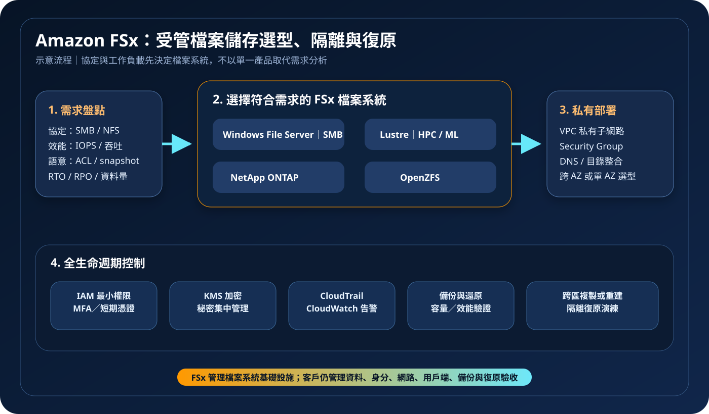

Amazon FSx：受管檔案儲存與選型基礎
Amazon FSx 提供以常見檔案系統技術為基礎的受管檔案儲存，涵蓋 Windows File Server、Lustre、NetApp ONTAP 與 OpenZFS。它能降低檔案系統基礎設施維運負擔，但不會自動完成協定選型、資料授權、用戶端安全、效能驗證、備份政策或跨區復原。
作者：Dr. William｜查閱與發布：2026-11-24
服務定位
Amazon FSx 是受管檔案儲存服務家族。AWS 負責檔案伺服器或儲存叢集的底層硬體、部分軟體部署、故障替換與服務控制面；客戶透過 VPC 網路連接檔案系統，並管理資料、身分、分享、目錄、網路、安全、效能及復原。
Amazon FSx for Windows File Server 面向需要原生 SMB、Windows ACL、Active Directory 整合與 Windows 檔案語意的工作負載。Amazon FSx for Lustre 面向高效能運算、機器學習、媒體處理與需要高吞吐平行檔案系統的工作負載，並可依設計與 Amazon S3 資料連結整合。
Amazon FSx for NetApp ONTAP 提供 ONTAP 資料管理能力與多協定選項，適合既有 NetApp 經驗、複雜快照／複寫或多協定需求。Amazon FSx for OpenZFS 提供以 OpenZFS 為基礎的 NFS 檔案儲存與 ZFS 資料管理語意。實際支援協定、部署類型、區域、配額與功能應依各產品最新文件核對。
FSx 不是 S3 物件儲存、EBS 單機區塊磁碟、EFS 通用彈性 NFS、Storage Gateway 混合協定橋接、資料庫或備份產品。若應用不依賴特定檔案語意，應比較 S3、EFS、EBS、Storage Gateway 與其他服務的成本及操作模型。
核心概念
四種檔案系統
- Windows File Server：SMB、Windows ACL、Active Directory 與 Windows 工作負載整合。
- Lustre：平行檔案系統、高吞吐與大量運算節點並行存取。
- NetApp ONTAP：多協定、Storage Virtual Machine、volume、snapshot 與資料管理能力。
- OpenZFS：NFS、ZFS snapshot、clone 與低延遲檔案工作負載。
共同設計面
- 部署類型：單一可用區或多可用區選項依產品而異，影響成本與故障範圍。
- 儲存與吞吐：容量、SSD／HDD、吞吐容量、快取與 IOPS 模型依檔案系統不同。
- 網路介面：檔案系統位於 VPC，透過 ENI、路由、Security Group、DNS 與必要連接埠存取。
- 備份與快照：可用機制、保留、複製及還原粒度依產品不同；快照不等同跨區災難復原。
- 管理與觀測：使用 IAM 控制 API，透過 CloudTrail、CloudWatch 與檔案系統原生工具監控。
適合與不適合的使用情境
適合
- Windows 應用需要 SMB、NTFS ACL、檔案鎖定與企業 Active Directory 整合。
- HPC、ML 訓練、EDA、媒體渲染或基因分析需要大量節點並行讀寫。
- 既有 NetApp 工作負載需要 ONTAP 操作模式、多協定、快照、複寫或分層能力。
- NFS 應用需要 OpenZFS snapshot、clone、壓縮或 ZFS 相容語意。
- 團隊希望使用受管檔案服務，但仍能明確管理 VPC、目錄、權限、容量、效能與復原。
不適合或不能單獨完成
- 資料主要以 HTTP 物件 API、事件通知、生命週期與全球大規模物件儲存方式使用；通常先評估 S3。
- Linux 通用共享檔案只需要簡單彈性容量，不依賴 Lustre、ONTAP 或 OpenZFS 特有能力；通常應比較 EFS。
- 單一 EC2 需要低延遲區塊裝置，且不需要多主機檔案共享；通常應比較 EBS。
- 應用無法接受網路檔案系統延遲、協定行為或單區域故障，又沒有快取、重試及復原設計。
- 希望以單一快照或每日備份直接滿足所有勒索軟體、跨帳號、跨區與法遵需求。
- 尚未盤點 Windows ACL、NFS UID／GID、目錄、DNS、連接埠、檔案鎖定與特殊 metadata。
示意故事案例：研究團隊建立私有高效能分析區
以下為示意案例，不代表特定企業或正式部署。 一家研究機構以數百台運算節點分析影像資料。原有 NFS 在尖峰期無法提供足夠吞吐，但資料完成後仍需長期保存並限制研究群組之間的存取。
團隊先量測檔案大小、並行節點數、讀寫比例、metadata 操作、暫存容量、工作持續時間與復原要求，選擇符合區域及效能需求的 FSx for Lustre 部署。檔案系統置於研究 VPC 的私有子網路，只允許運算節點 Security Group 存取必要連接埠；操作人員使用聯合身分、MFA 與短期角色，服務管理權限依建立、調整、備份與唯讀監看分離。
來源資料以私有 S3 bucket 保存，啟用 Block Public Access、版本與 KMS 加密；工作資料只在核准流程下匯入。CloudTrail 集中記錄 FSx、IAM、KMS、S3 與網路控制面操作，CloudWatch 監控容量、吞吐、IOPS、錯誤與告警。研究結果完成驗證後輸出到受控 S3，FSx 備份依保留政策保存；關鍵資料另建立跨帳號與跨區復原副本，並定期以隔離環境驗證重建及還原。

建置與運作流程
- 盤點應用、作業系統、SMB／NFS／Lustre 協定、ACL、UID／GID、檔案鎖定與 metadata 需求。
- 量測容量、檔案數、平均檔案大小、尖峰 IOPS、吞吐、延遲、並行用戶端及成長率。
- 分類資料敏感度、所有權、保留、落地區域、跨境、刪除與不可變要求。
- 定義 RTO、RPO、單 AZ／多 AZ 容忍度、備份頻率、跨區策略與還原驗收標準。
- 比較 Windows File Server、Lustre、ONTAP、OpenZFS 與 S3、EFS、EBS 等替代方案。
- 核對目標區域的部署類型、協定、儲存類型、吞吐容量、配額、限制與價格。
- 設計 VPC、子網路、路由、Security Group、DNS、時間同步、目錄與用戶端網路。
- 操作人員使用聯合身分、MFA 與短期工作階段，分離建立、變更、備份與稽核角色。
- 建立最小權限 IAM 政策與服務整合權限，限制資源、條件、標籤及 KMS 金鑰。
- 選擇 AWS 管理或客戶管理 KMS 金鑰，驗證 key policy、grant、停用與復原權限。
- 把目錄密碼、整合秘密或自動化參數放入 Secrets Manager／Parameter Store，不寫入程式碼或日誌。
- 建立檔案系統、volume 或 share，設定容量、吞吐、部署類型、備份窗口及維護窗口。
- 建立最小範圍分享與檔案權限，驗證 Windows ACL、NFS export、ONTAP SVM／volume 或 Lustre 掛載。
- 以代表性資料執行功能、鎖定、權限、效能、容量、用戶端斷線與服務故障測試。
- 啟用組織層級 CloudTrail，集中保存 FSx、IAM、KMS、目錄、S3 與網路設定變更。
- 建立 CloudWatch 儀表板與告警，監控容量、吞吐、IOPS、延遲、網路、錯誤與備份狀態。
- 依資料一致性要求協調應用停寫、quiesce 或原生 snapshot，再執行備份。
- 建立跨帳號備份、跨區複製、檔案系統重建或資料回灌流程，避免單一區域成為唯一復原點。
- 在隔離環境定期還原檔案系統與應用，核對權限、DNS、目錄、資料完整性及 RTO／RPO。
- 依實際指標調整容量與吞吐，持續檢查閒置資源、備份保留、資料分層與費用異常。
- 退役前完成資料移轉與還原驗證，再撤銷分享、角色、金鑰 grant、目錄信任及網路規則。
成本、可用性與維運考量
FSx 費用依產品及區域可能包含儲存容量、SSD／HDD、吞吐容量、IOPS、備份儲存、資料傳輸、跨區複製、S3 存取、KMS、CloudWatch、目錄服務、VPC 連線與快照相關費用。Windows、Lustre、ONTAP 與 OpenZFS 的計價單位不同，不能只用每 GB 單價比較。
容量規劃應同時評估尖峰吞吐、IOPS、metadata、壓縮／重複資料刪除、快取命中、備份變更率與資料生命週期。過度配置會形成固定支出；配置不足可能造成延遲、節流、空間耗盡或備份失敗。正式估算需使用目標區域價格頁與代表性壓力測試。
多可用區部署可降低部分基礎設施故障風險，但不等同跨區災難復原，也不能修復誤刪、惡意加密、錯誤 ACL 或應用資料損壞。單可用區部署成本可能較低，但故障範圍更集中。可用性還取決於 DNS、目錄、用戶端、VPC、路由、Security Group、金鑰、備份及應用重試。
Amazon FSx 特有資安風險與控制
- 檔案系統選錯造成控制落差：以協定、ACL、目錄、snapshot、效能與復原需求建立選型紀錄，不因同屬 FSx 而視為可互換。
- 管理 API 權限過大：操作人員使用聯合身分、MFA、短期憑證及最小權限角色，限制建立、刪除、備份、還原與分享操作。
- 檔案分享橫向暴露：放在私有子網路，以 Security Group、路由、NACL 與用戶端白名單限制 SMB、NFS 或 Lustre 連線。
- Windows 目錄整合失效：限制服務帳號權限，保護目錄秘密，監控 DNS、時間同步、信任與帳號鎖定；不得把密碼寫入範本或日誌。
- NFS 身分映射錯誤：一致治理 UID／GID、root squash、export path 與用戶端來源，避免匿名或特權映射擴權。
- ONTAP 多協定權限衝突：明確定義 UNIX 與 NTFS security style、名稱映射、SVM、volume、share 及 export policy。
- Lustre 高速共享擴大資料外洩：工作節點採專用 Security Group，限制掛載來源，分離原始資料、暫存資料與輸出資料權限。
- 公開或跨網路路徑誤設：不把檔案協定直接暴露於網際網路；混合連線使用受控 VPN／Direct Connect 與明確路由。
- KMS 金鑰不可用：限制 key policy 與 grant，監控停用、排程刪除及拒絕事件，驗證備份還原與跨帳號存取。
- 秘密散落：目錄、應用與自動化秘密放在 Secrets Manager／Parameter Store，頁面、腳本、指令與日誌不得含 credential、Access Key、Secret Key、Token、密碼或 cookie。
- 快照被誤認為獨立備份：依產品建立受保護備份、跨帳號／跨區副本與保留控制，定期測試從備份重建。
- 勒索軟體沿分享加密：限制寫入群組、分離管理與使用者權限、啟用版本／快照／不可變備份策略，監控異常修改量。
- 容量耗盡：對可用容量、吞吐、IOPS、inode／metadata 與備份失敗告警，建立擴容與停止寫入程序。
- 控制面無法追溯：CloudTrail 集中記錄 FSx、IAM、KMS、目錄與網路變更，保護日誌完整性並設定異常告警。
- 資料面活動不可見：依檔案系統能力啟用原生日誌、稽核或用戶端記錄，避免只看 CloudTrail 就宣稱掌握所有檔案操作。
- 跨區復原只存在文件：在隔離區域測試檔案系統建立、資料回灌、DNS／目錄重連、ACL 驗證與應用啟動。
- 刪除保護與退役不足：刪除前確認備份、輸出與保留證據，撤銷掛載、分享、角色、金鑰 grant 及網路存取。
共同責任邊界
AWS 負責 Amazon FSx 受管服務與底層雲端基礎設施，依產品提供檔案伺服器或儲存叢集部署、硬體維護、故障處理、服務控制面，以及與 IAM、KMS、CloudTrail、CloudWatch、Backup 或 S3 等服務的整合能力。
客戶負責選擇正確檔案系統與部署類型、資料分類、用戶端、目錄、檔案與分享權限、IAM 最小權限、MFA／短期憑證、網路隔離、公開存取、KMS 政策、Secrets Manager／Parameter Store、CloudTrail／CloudWatch、容量、效能、應用一致性、備份、還原演練及跨區復原。服務顯示可用不代表資料授權、應用一致性與復原結果已通過驗收。
上線與維運可執行檢查清單
- □ 協定、ACL、目錄、UID／GID、檔案鎖定、metadata 與用戶端清冊完整。
- □ 容量、檔案數、IOPS、吞吐、延遲、並行度與成長率已量測。
- □ 資料分類、所有權、保留、落地、跨境、刪除與不可變要求已核准。
- □ 已比較四種 FSx 與 S3、EFS、EBS、Storage Gateway 等替代方案。
- □ 目標區域的部署類型、協定、配額、限制、價格與服務支援已核對。
- □ RTO、RPO、單 AZ／多 AZ 邊界、跨區策略與還原驗收已定義。
- □ VPC、私有子網路、路由、DNS、時間同步與必要連接埠已測試。
- □ Security Group 只允許核准用戶端，檔案協定未直接暴露於網際網路。
- □ 人員使用聯合身分、MFA 與短期角色，建立、刪除、備份及稽核權限分離。
- □ IAM 政策限制資源、動作、標籤與條件，沒有不必要萬用權限。
- □ KMS key policy、grant、停用、刪除與跨帳號復原權限已測試。
- □ 目錄及整合秘密集中於 Secrets Manager／Parameter Store，無明文秘密。
- □ Windows ACL、NFS export、ONTAP SVM／volume 或 Lustre 掛載均已驗證。
- □ 代表性資料已完成鎖定、權限、效能、容量、斷線與故障測試。
- □ CloudTrail 集中記錄 FSx、IAM、KMS、目錄、S3 與網路控制面操作。
- □ CloudWatch 告警涵蓋容量、吞吐、IOPS、延遲、錯誤與備份狀態。
- □ 應用一致性、停寫、quiesce 或原生 snapshot 程序已建立。
- □ 備份具明確保留、刪除保護、跨帳號或跨區策略，且不只依賴同系統快照。
- □ 已在隔離環境還原資料、權限、DNS、目錄與應用，RTO／RPO 符合門檻。
- □ 成本告警、容量調整、資料分層與閒置資源檢查已納入例行維運。
- □ 退役流程包含資料移轉、還原驗證、掛載撤銷、角色與金鑰 grant 清理。
AWS 官方一手來源
- Amazon FSx 產品頁（查閱：2026-11-24）
- What is Amazon FSx for Windows File Server?（查閱：2026-11-24）
- What is Amazon FSx for Lustre?（查閱：2026-11-24）
- What is Amazon FSx for NetApp ONTAP?（查閱：2026-11-24）
- What is Amazon FSx for OpenZFS?（查閱：2026-11-24）
- Security in FSx for Windows File Server（查閱：2026-11-24）
- Security in FSx for Lustre（查閱：2026-11-24）
- Security in FSx for ONTAP（查閱：2026-11-24）
- Security in FSx for OpenZFS（查閱：2026-11-24）
- Monitoring FSx for Windows with CloudWatch（查閱：2026-11-24）
- Monitoring FSx for Lustre with CloudWatch（查閱：2026-11-24）
- Logging FSx API calls with CloudTrail（查閱：2026-11-24）
- Working with user-initiated backups（查閱：2026-11-24）
- Working with FSx for ONTAP backups（查閱：2026-11-24）
- Amazon FSx Pricing（查閱：2026-11-24）
- AWS Shared Responsibility Model（查閱：2026-11-24）
內容說明
本文依 2026-11-24 可查閱的 AWS 官方文件整理。Amazon FSx 的檔案系統類型、部署選項、協定、區域、配額、效能、備份、複寫、監控指標與定價可能更新；正式導入前應依目標區域最新文件、代表性負載測試、資安審查、費用估算及隔離還原演練為準。